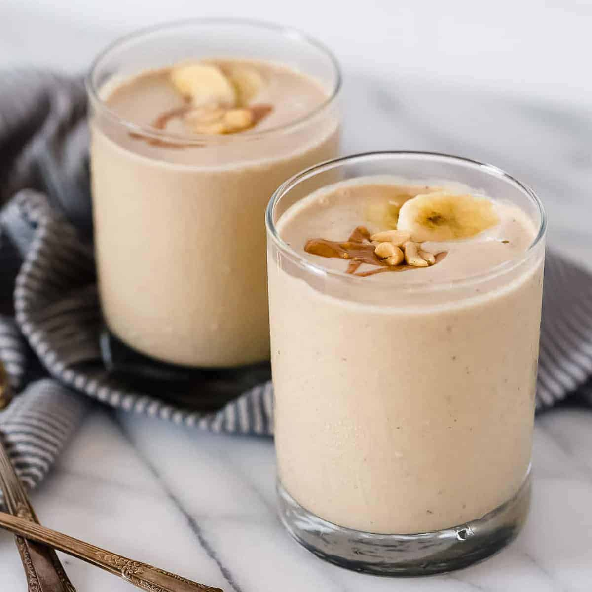

Peanut butter Banana Smoothie

Description
Although most people think of protein as meat, beans, and eggs, high-protein doesn’t mean you can’t enjoy something sweet and a little decadent.
Ingredients
- 1 average-sized banana
- 2 TBSP of peanut butter
- 1 glass of milk
- 2 TSP of honey
- 3 cubes of ice
Steps
- Add ice and peanut butter to the glass of milk
- Chop the banana and add to the mix
- Top with honey
- Blend for 2 minutes
- Enjoy!
Go back